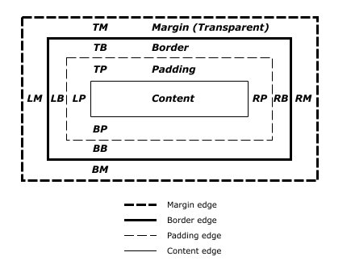
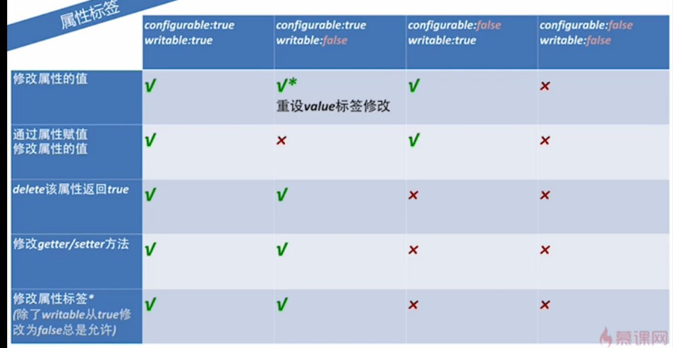

Created by yangzj1992/ build by reveal.js
CSS的块/行级元素、浮动定位布局..
JS基本概念、数据类型、引用类型、作用域、函数..
相关读书笔记保存在个人为知笔记上
并且采纳了伟庆哥的建议发布总结的笔记在个人网站。

//p水平总宽需要为400px
p{margin-left:auto;margin-right:100px;width:100px;}
//p水平总宽需要为400px p{margin-left:100px;margin-right:100px;width:100px;}过分受限
不止一个auto时
//p水平总宽需要为400px p{margin-left:auto;margin-right:auto;width:100px;}
//p水平总宽需要为400px
p{margin-left:auto;margin-right:100px;width:auto;}
//p水平总宽需要为400px
p{margin-left:auto;margin-right:auto;width:auto;}
垂直上下外边距设为auto==0
a paragraph
a paragraph
div{width:400px;border:3px solid black;}
p{margin-left:10px;width:auto;margin-right:-50px;border:3px solid red;}
div{width:400px;border:3px solid black;}
p{margin-left:-50px;width:auto;margin-right:10px;border:3px solid red;}
Hello
Hello
行间距 = line-height - font-size 的值分半应用到行内框顶部和底部
a:link{border:5px solid blue;}
vertical-align进行垂直对齐 主要属性：top,bottom,middle,text-top..
行内替换元素增加内外距，边框和外边距会增大行内框
设置负外边距是使行内替换元素挤入其他行的唯一办法
display:block|inline|inline-block|list-item|....
只是改变显示，不影响元素的本质。
this is wrong!
static|relative|absolute|fixed|
left|right|none|
元素为常规流中inline元素,直接父元素设置text-align:center;
元素为常规流中block元素，1）为元素设置宽度，margin:auto。2）IE6下父元素设置text-align: center;,再给子元素恢复需要的值
需要居中的元素为浮动元素
I am float
body {
background: #DDD;
}
.content {
width: 500px;
float: left;
position: relative;
left: 50%;
margin-left: -250px;
background-color: purple;
}
需要居中的元素为绝对定位元素
i am absolute
body {
background: #DDD;
position: relative;
}
.content {
width: 800px;
position: absolute;
left: 50%;
margin-left: -400px;
background-color: purple;
}
两列，左边宽度自适应，右边200px定宽
#box1{width:100%;height:600px;position:relative;}
#left1{margin-right:200px;border:1px solid red;height:100%;}
#right1{width:200px;height:100%;position:absolute;top:0px;right:0px;border:1px solid blue;}
清楚浮动方法一
Left
Right
div2
清楚浮动方法二(比较专业)
Left
Right
div2
5种数据类型，1种对象类型
==会自然转换
"1.23"==1.23 0==false null==undefined new Object()==new Object()
===类型不同返回false,类型相同进行比较
null===null undefined===undefined NaN≠NaN new Object()≠new Object()
typeof instanceof Object.prototype.toString
typeof 100 "number"
typeof true "boolean"
typeof function "function"
typeof(undefined) "undefined"
typeof new Object() "object"
typeof [1,2] "object"
typeof NaN "number"
typeof null "object"不是null (返回字段的兼容历史问题）
obj instanceof Object
判断左操作数的对象的原型链上是否有右构造函数的prototype属性
function Person(){}
function Student(){}
Student.prototype=new Person()
Student.prototype.constructor=Student
var bosn=new Student()
bosn instanceof Student //true
var one =new Person()
one instanceof Person //true
one instanceof Student //false
bosn instanceof Persons //true
object.prototype.toString.apply([]);==="[object Array]";
object.prototype.toString.apply([])===object Array
object.prototype.toString.apply(function(){})===object Function
object.prototype.toString.apply(null)===object Null
object.prototype.toString.apply(undefined)===object Undefined
for(var i=0;i<10;i++){
var str="hi";
console.log(str);
}
var i=0;
for(;i<10;i++){
var str="hi";
console.log(str);
}
function foo(){
var a=b=1;
}
foo();
console.log(typeof a)
console.log(typeof b)
var name = 'laruence';
function echo() {
alert(name);
var name = 'eve';
alert(name);
alert(age);
}
echo();
var x = 3;
var foo = {
x: 2,
baz: {
x: 1,
bar: function() {
return this.x;
}
}
}
var go = foo.baz.bar;
alert(go());
alert(foo.baz.bar());
产品 0
产品 1
产品 2
产品 3
产品 4
两种构造方式
var cat =new Animal();
cat.name="mimi";
cat.age="5";
var cat={
name:"mimi",
age:"5"
}
检测方法：instanceof
转换方法：toLocalString()、toString()、valueOf()、join()
栈方法:push() pop()
队列方法:shift() unshift()
排序方法:sort()
操作方法:concat() slice()、splice()
位置方法:indexOf() lastIndexOf()
迭代方法:every() filter() forEach() map() some()
位置方法:indexOf() lastIndexOf()
/g /i /m
. \w \s \d \b ^ $ （...) [...] [^...] \0 \n \f \r \t \v
{*} {+} {?} {n,m}
没有重载
arguments arguments.callee caller
function outer(){
inner();
}
function inner(){
alert(arguments.callee.caller);
}
outer();
Boolean Number String类
Configurable \ Enumerable \ Writable \ Value
工厂模式 构造函数模式 原型模式
组合构造函数和原型模式
function Person(name, age, job){
this.name = name;
this.age = age;
this.job = job;
this.friends = ["Shelby", "Court"];
}
Person.prototype = {
constructor: Person,
sayName : function () {
alert(this.name);
}
};
var person1 = new Person("Nicholas", 29, "Software Engineer");
var person2 = new Person("Greg", 27, "Doctor");
person1.friends.push("Van");
alert(person1.friends); //"Shelby,Court,Van"
alert(person2.friends); //"Shelby,Court"
alert(person1.friends === person2.friends); //false
alert(person1.sayName === person2.sayName); //true
稳妥构造函数模式
function Person(name,age,job){
//创建要返回的对象
var o=new Object();
//可以在这里定义私有变量和函数
//添加方法
o.sayName=function(){
alert(name);
}
//返回对象
return o;
}
var friend=Person("Nicholas",29,"Software Engineer");
friend.sayName();
组合继承
function SuperType(name){
this.name=name;
this.colors=["red","blue","green"];
}
SuperType.prototype.sayName=function(){
alert(this.name);
}
function SubType(name,age){
//继承属性
SuperType.call(this,name);
this.age=age;
}
//继承方法
SubType.prototype=new SuperType();
SubType.prototype.constructor=SubType;
SubType.prototype.sayAge=function(){
alert(this.age);
}
var instance1=new SubType("Nicholas",29);
instance1.colors.push("black");
alert(instance1.colors);//red,blue,green,black
instance1.sayName();//Nicholas
instance1.sayAge();//29
var instance2=new SubType("Greg",27);
alert(instance2.colors);//red,blue,green
instance2.sayName();//Greg
instance2.sayAge();//27
寄生组合式继承
function SuperType(name){
this.name = name;
this.colors = ["red", "blue", "green"];
}
SuperType.prototype.sayName = function(){
alert(this.name);
};
function SubType(name, age){
SuperType.call(this, name);
this.age = age;
}
inheritPrototype(SubType, SuperType);
SubType.prototype.sayAge = function(){
alert(this.age);
};
- 源代码